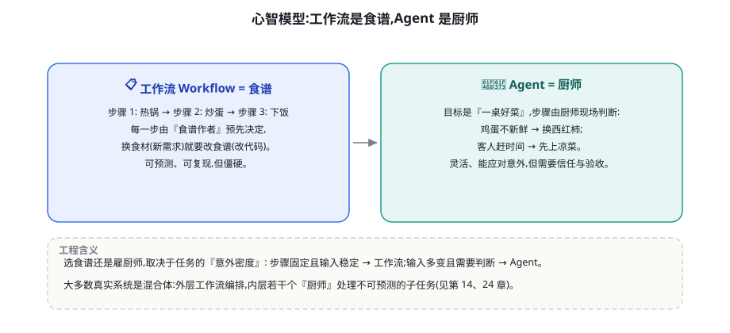
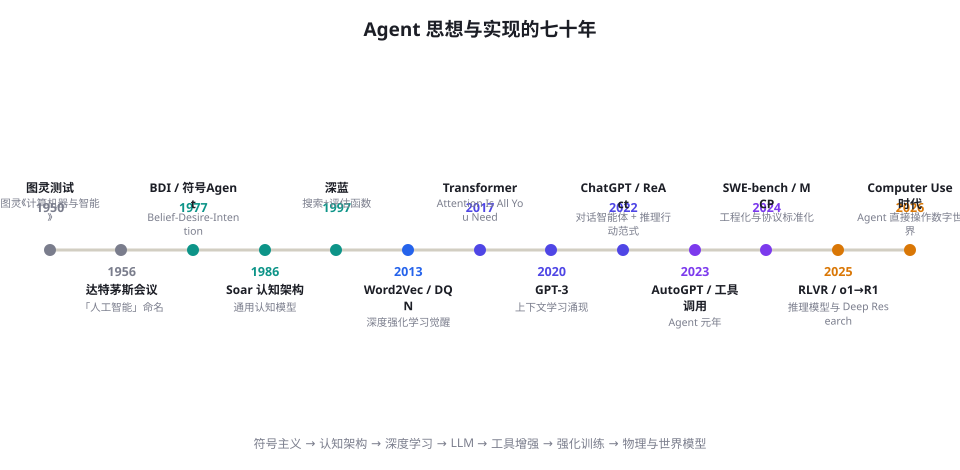

Agent 通识：定义、心智模型与七十年简史
「Agent」这个词被用得太滥，以至于快要失去含义。本章做三件事：给出一个经得起推敲的工作定义、建立一个你随时可以调用的心智模型、再用七十年历史告诉你——今天的一切新东西，几乎都有旧根。读完你将拥有讨论 Agent 的「标准度量衡」。
定义：什么样的系统才配叫 Agent
教科书上的经典定义来自 Russell 与 Norvig：Agent 是「能够感知环境（perceive）、并对环境施加行动（act）以达成目标的任何实体」（《人工智能：现代方法》第 2 章）。这个定义刻意地宽——按它衡量，恒温器、导弹、足球机器人和股价交易脚本都是 Agent。它给了我们第一条有用的性质：Agent 必须闭环：它的行动会改变环境，环境的变化又会被它感知。
但工程上我们关心的不是宽定义，而是「LLM Agent」的区别性特征。综合 Wooldridge 与 Jennings 对智能 Agent 的经典刻画（autonomy, reactivity, pro-activeness, social ability, 1995）与当代 LLM 实践，本书使用如下工作定义：
LLM Agent 是一个以大语言模型为决策核心的系统：它将目标与观察映射为行动（工具调用、内容产出、环境操作），在循环中持续感知行动的后果，并能在有限的资源预算内自主地分解与推进任务。
把这个定义拆成四个判据，你可以用它给任何号称「Agent」的产品「验货」：
| 判据 | 问题 | 不满足时的真实身份 |
|---|---|---|
| 模型驱动决策 | 「下一步做什么」是模型判断的，还是代码写死的？ | 普通自动化脚本 / RPA |
| 环境闭环 | 行动结果会反馈回系统吗？ | 开环的内容生成器 |
| 工具使用 | 能调用模型权重之外的能力吗（检索、代码、API）？ | 聊天机器人 |
| 任务级自主 | 给它目标（而非每步指令），它能自行分解推进吗？ | 由人逐步驾驶的「副驾驶」 |
注意第四条：它与 Anthropic 在《Building Effective Agents》（2024）中给出的区分一致——Workflow 由开发者编排步骤，Agent 由模型决定步骤。这个区分不是价值判断：Workflow 更可控、更便宜、更好调试，大量生产系统应当是 Workflow（第 14 章给出完整的决策框架）。
心智模型：食谱与厨师
把四判据进一步操作化为「验货清单」：下次评估一个号称 Agent 的产品时，问销售或文档这四个问题——①「用户给出目标和给出步骤指令时，系统行为有什么不同？」（答不出=决策是写死的）；②「上一步操作的返回值会出现在下一步的提示里吗？」（不会=开环）；③「它能使用你们开发时没预料到的工具吗？」（不能=工具集固定，自主性有限）；④「任务中途失败，它会自己换路吗？」（不会=没有真正的自主规划）。四个答案构成的画像，比任何 demo 视频都诚实。
这四条判据还有第二个用途：诊断。当你的「Agent」表现糟糕时，逐条检查——大多数令人失望的系统，败在第一条（决策其实是写死的流程，模型只负责措辞）或第二条（没有把执行结果喂回去，开环放炮）。第 79 章的可观测性工具会帮你精确到步地定位。
定义之外，你还需要一个能在饭桌上讲清楚的心智模型。我们的版本是：

这个比喻之所以重要，是因为它把三个工程问题一并带了出来：
- 验收问题：你怎么知道厨师做的菜合格？——对应评测（第 50-57 章）。雇厨师的成本里，最大的一块不是工资，是试吃。
- 授权问题：你可以让厨师自由用厨房，但保险柜要不要交给他？——对应权限与沙箱（第 60 章）。
- 意图保真问题：「做顿清淡的」这个模糊目标，厨师理解对了多少？——对应目标规范与上下文工程（第 23 章）。模糊输入 + 强自主 = 高风险组合。
另一个常用的心智模型是「实习生比喻」：今天的顶尖 Agent 大致相当于一个聪明、博览群书、但毫无你公司上下文、且偶尔自信过头的实习生。它适合接手有明确验收标准的任务，不适合无人监督地接触生产数据库。这个比喻的工程推论：与其抱怨实习生笨，不如把岗位说明书（系统提示词）、工具（MCP Server）和验收流程（评测）建好。
同一个任务的三种实现：把定义变成代码
定义与比喻之后，我们用同一个任务——「处理一笔退货请求」——展示三种系统形态的代码骨架差异。这不是伪代码风格的装饰，而是第 14 章决策框架的预告：
# ── 形态一:规则脚本。决策权在开发者,模型不参与 ──
def handle_refund(order):
if order.days_since_purchase <= 7 and order.amount < 100:
refund(order) # 硬编码的边界
else:
ticket_to_human(order) # 覆盖不到的情况=客诉
# ── 形态二:工作流(LLM 参与但步骤写死)。决策权仍主要在开发者 ──
def handle_refund_wf(order):
category = llm("把客户留言分类: 质量问题/不想要了/其他", order.comment)
if category == "质量问题":
refund(order) # 每一步由代码编排
elif category == "不想要了":
offer_store_credit(order)
else:
ticket_to_human(order)
# ── 形态三:Agent(模型在循环中自主决定下一步) ──
def handle_refund_agent(order):
messages = [system(POLICY), user(order.to_prompt())] # 目标+政策+上下文
for _ in range(MAX_STEPS): # 资源预算=刹车
action = llm_choose(messages, tools=[refund, credit,
check_policy, escalate, ask_customer])
obs = execute(action) # 行动→观察
messages.append(obs) # 闭环
if action.name == "done":
return obs.result # 决策权在模型,边界在工具与政策三种形态没有绝对优劣：规则脚本在输入空间小且稳定时无可替代（成本近乎为零、行为 100% 可预测）；工作流是当前大多数生产系统的正确选择；Agent 适合输入多变、判断密集、且你能承担验证成本的场景。工程上最常见的错误，是在三者之间凭时尚而非凭分析做选择——第 14 章会给你完整的决策树。
七十年简史：今天的每个「新」想法都有旧根

我们把七十年压缩成四幕。理解每一幕的「遗产」与「死因」，能让你在今天的技术选型中天然带着免疫力。
第一幕（1950-1985）：符号主义——把推理写进规则
图灵 1950 年提出「模仿游戏」时，机器智能的默认想象就是对话式 Agent。此后三十年，主流路径是符号主义：把世界表示成符号，把推理写成规则。GPS（General Problem Solver，Newell & Simon 1959）尝试用「手段-目的分析」通用地解题；专家系统（MYCIN，1976）在医疗领域达到专科医生水平的咨询能力。行为层面，这一幕留下了两份直接遗产：搜索与规划算法（A*、STRIPS），至今活在第 93、94 章；以及 BDI 模型（Belief-Desire-Intention，Rao & Georgeff 1988），它对「信念可能过时、意图需要承诺与撤销」的形式化，仍然是多 Agent 系统设计的思想骨架（第 95 章）。
死因也清楚：规则的获取与维护成本指数增长（知识工程瓶颈），且现实世界充满无法枚举的例外。1987 年起，符号主义 AI 进入「寒冬」。
把「知识工程瓶颈」的句式套到今天你会发现惊人的相似：符号主义时代专家痛苦地「把脑内知识写成规则」；今天工程师痛苦地「把领域知识写成提示词与工具描述」。两者的本质都是自然语言知识的工程化成本。区别在于：LLM 把「写出正确规则」变成了「写出正确的上下文」，成本下降了一到两个数量级——但没有归零。第 23 章（上下文工程）就是这个教训的现代版。
第二幕（1986-2012）：学习与概率——让机器从数据中长出能力
反向传播的复兴（1986）、统计学习理论、以及 Sutton 等人坚持数十年的强化学习（Q-learning 1989, TD-Gammon 1992）把范式从「写规则」扭转为「学规律」。1997 年深蓝击败卡斯帕罗夫展示了「暴力搜索 + 评估函数」的天花板；而同一时期的 Agent 理论（Wooldridge & Jennings 1995）与认知架构（Soar、ACT-R）继续在学院里沉淀「什么是通用 Agent 该有的结构」。这一幕的遗产： 学习范式与强化学习的数学（MDP、价值函数、策略梯度）——它们将在第 40-49、91-92 章以几乎原封不动的形式回归。
第三幕（2013-2021）：深度学习——感知与生成被攻克
这一幕最容易被低估的遗产是工程文化：基准（ImageNet）、论文代码开源、可复现实验成为社区规范——这套文化被完整继承到今天的 Agent 领域，SWE-bench 与 GAIA（第 51-53 章）都是它的直系后代。
这一幕最容易被低估的遗产是工程文化：基准（ImageNet）、论文代码开源、可复现实验成为社区规范——这套文化被完整继承到今天的 Agent 领域，SWE-bench 与 GAIA（第 51-53 章）都是它的直系后代。
AlexNet（2012）点燃深度学习；DQN（2013）与 AlphaGo（2016）证明「深度网络 + 强化学习 + 搜索」可以攻克长期被认为需要直觉的领域；Transformer（2017，arXiv:1706.03762）与 GPT-3（2020）则完成了对「语言」这一最通用行为接口的建模。特别值得指出：GPT-3 的 in-context learning（2020）首次显示，足够大的模型能从示例中「即时学会」新任务而无需更新权重——这是后来一切「提示词驱动 Agent」的能力前提。同一时期，机器翻译、语音识别、图像理解相继达到实用水平，感知的各条通道被逐一打通。
第四幕（2022-至今）：LLM Agent——语言成为行动的通用接口
2022 年发生了两件看似无关的事：OpenAI 用 RLHF 把 GPT-3 调教成听指令的 InstructGPT（arXiv:2203.02155）；Google 的 Yao 等人发布 ReAct（arXiv:2210.03629），让模型在「思考」与「行动」之间交替。两件事叠加，LLM 第一次同时具备「可指令化」与「可行动化」。此后按下快进键：AutoGPT 让公众第一次看到「模型自己给自己下指令」的 wild demo；Function Calling（2023.6）与 MCP（2024.11）把工具生态标准化；SWE-bench（2023.10 起）与 o1/R1（2024-2025）分别从评测与训练两侧把「长任务可靠性」往前推；到 2025-2026，Computer Use 类系统让 Agent 直接操作图形界面，Deep Research 类产品让普通用户体验到「扔一个研究课题，二十分钟后收报告」。
第四幕还有一条常被忽视的暗线：开源社区的推进力。LangChain（2022.10 首发）让工具编排的门槛骤降，LLaMA 权重泄露（2023.3）意外催生了本地模型生态，AutoGen/MetaGPT/CrewAI 把多智能体研究工程化，DeepSeek-R1（2025.1）以 MIT 协议开源了推理范式的完整配方。与前三幕主要由实验室与大公司驱动不同，这一幕的半数基础设施由开源社区建成——理解这一点，才能理解为什么本书把「可复现」作为一条写作纪律。
每一次 Agent 热潮都伴随过冷思考：符号主义时期对「常识获取」的悲观（Moravec 悖论：对机器而言，高级推理易、感知运动难）；90 年代多 Agent 系统对「协调成本」的研究（今天关于多 Agent 是否被高估的争论是它的回声，见第 24 章）；2010 年代对「端到端学习 vs 神经符号结合」的路线之争。读史的价值在于：当你在 2026 年看到某个「全新范式」的宣言时，能快速判断它到底在轮回哪一幕、继承了哪些教训。
版图之外，补充一个时间维度的观察：物种之间的边界正在溶解。2024 年你还能清楚地区分「聊天助手」与「编码 Agent」，到 2026 年，同一个产品在工作日是你的编码 Agent、下班后是你的研究助手、周末用 Computer Use 帮你订机票。这不是单个产品功能变多，而是底层能力（长上下文、工具调用、计算机操作）一旦通用化，物种划分就只剩产品包装的意义。对你而言的启示是：学机制比学产品保值——产品会合并消失，机制会迁移永存。
带七十年历史的透镜回看今天的版图，你会发现所谓「Agent 生态」其实是四幕遗产的叠层：搜索与规划算法在最底层（第 93-94 章），学习与概率在其上（第 91-92、96 章），深度感知再其上（第 66 章），而 LLM 作为通用行为接口把四者粘合（第 15 章）。理解这个叠层结构，你就能判断任何新系统：它哪几层是自己建的，哪几层是借的。
四种学派，四种 Agent 观
七十年历史留下了四个「看 Agent 的角度」，今天的争论几乎都是它们的现代变体。掌握这四副眼镜，你在读任何观点文章时都能立刻识别对方站在哪里：
| 学派 | Agent 是什么 | 可靠性来自 | 当代代表主张 |
|---|---|---|---|
| 符号主义 | 可形式化的推理机器 | 显式规则与验证（PDDL、模型检测） | 「LLM 不可靠，必须有形式化外骨骼」——LLM+P、神经符号路线（第 94 章） |
| 连接主义 | 大规模模式匹配的涌现能力 | 更多数据、更多算力、更好的规模曲线 | 「能力问题终将被 scaling 解决」——推断时计算与持续预训练（第 98 章） |
| 行为主义/控制论 | 感知-行动闭环的适应系统 | 反馈回路的质量与延迟 | 「别谈心智，先闭环」——RLVR、Agent RL、具身智能（第 43-45、69 章） |
| 认知架构 | 有工作记忆/长时记忆/程序性技能分层的认知系统 | 架构设计对人类认知的拟合 | 「LLM 是新皮层，还需要整套架构」——MemGPT、Soar 复兴派（第 19、95 章） |
本书的立场是工程实用主义：四副眼镜轮流戴。判断「要不要形式化验证」时戴符号主义（第 94 章），预测「下一代模型能解决什么」时参考连接主义但保持怀疑（第 98 章），设计训练与护栏时用行为主义的闭环思想（第 43-45 章），组织长期记忆时借认知架构的分层（第 19 章）。单一眼镜的信徒都会在真实系统面前摔跟头——这个判断同样适用于看待今天社交媒体上的各种「路线之争」。
今天的版图：一张功能坐标图
最后，把「Agent」这个词下辖的物种放进一张坐标系，方便你在后续章节定位。横轴是环境复杂度（从单一 API 到开放网页/操作系统/物理世界），纵轴是任务自主度（从单步辅助到长时程全自主）：
| 物种 | 环境 | 自主度 | 代表系统 | 本书章节 |
|---|---|---|---|---|
| 聊天助手 | 纯对话 | 低 | ChatGPT、Claude | 第 6 章 |
| 工具增强助手 | 受控 API | 中 | 联网搜索、代码解释器 | 第 17 章 |
| 检索问答系统 | 企业知识库 | 中 | RAG 应用 | 第 20-21 章 |
| 编码智能体 | 代码仓库 | 高 | Claude Code、Devin、Codex | 第 74 章 |
| 研究智能体 | 开放网页 | 高 | Deep Research 类 | 第 73 章 |
| GUI/计算机操作 | 图形界面 | 高 | Computer Use、浏览器 Agent | 第 67、75 章 |
| 多智能体系统 | 受控/开放 | 高 | MetaGPT、深研系统 | 第 24 章 |
| 具身智能体 | 物理世界 | 高 | RT-2、π0 等机器人 | 第 69 章 |
三个流行误解
误解一：「Agent 就是要全自动。」事实：生产环境中最成功的 Agent 产品几乎都有精心设计的人工介入点（第 25 章）。全自动是营销语言，工程语言是「在验证可靠的环节自动，在其余环节请求许可」。
误解二：「模型越强，Agent 越好，所以只需要等模型。」事实：模型能力确实是天花板，但同一模型在不同系统设计下的表现差距可以达到数倍（第 23 章上下文工程、第 50 章评测方法都会给出证据）。系统工作不是等待工作的替代品。
误解三：「Agent 是全新物种，软件工程经验用不上。」事实：恰恰相反。确定性、幂等、最小权限、可观测性、灰度发布——这些数十年的工程原则在 Agent 时代全部适用，只是对象从代码变成了「提示词、工具与记忆」。你将在第 80、89 章反复看到老原则的新用法。
误解四：「这波不行了，泡沫要破了。」每次能力曲线进入平台期，这种声音就会出现。本书的立场是区分两件事：叙事的热度会退潮，基础设施的复利不会。即使明天所有「Agent 创业公司」消失，函数调用接口、MCP 生态、评测基础设施、以及「用自然语言驱动软件」的用户习惯都已沉淀为行业底座——如同 2000 年互联网泡沫破裂，泡沫死了，域名与光纤留了下来。对个人而言，正确的策略不是预测泡沫，而是确保自己在「复利」一侧：机制、评测与系统能力，永远不会因某个模型的兴衰而贬值。
本章小结
- 教科书定义：Agent = 感知 + 行动 + 目标闭环；LLM Agent 的四判据：模型驱动决策、环境闭环、工具使用、任务级自主。
- Workflow 由人编排步骤，Agent 由模型决定步骤——这是工程选型问题，不是优劣问题。
- 心智模型：工作流是食谱，Agent 是厨师；今天的最强 Agent ≈ 聪明但缺上下文的实习生。
- 七十年四幕：符号主义（遗产：搜索/规划/BDI）→ 学习与概率（MDP/RL）→ 深度学习（感知与生成）→ LLM Agent（语言成为行动接口）。
- 三种实现形态（规则/工作流/Agent）的决策权归属不同，选择应基于任务的「意外密度」分析而非时尚。
- 环境开放度与自主度同时放大能力上限与风险——这是全书的中心权衡。
自测题
- 用四判据检验你每天使用的一个 AI 产品：它是严格的 Agent 吗？差在哪条？
- BDI 模型中的「意图可撤销」对应现代 Agent 工程里的哪个机制？（提示：计划-执行-重规划。）
- 「知识工程瓶颈」在 LLM 时代以什么新形式重现？（提示：提示词与工具文档的维护成本。）
- 为什么说「环境开放度 × 自主度」是中心权衡？举一个两轴都升一级带来的新风险。
- 「泡沫死了，光纤留了下来」——列出你认为这轮浪潮中已经沉淀的三个「光纤级」资产，以及一个你判断为「泡沫级」的现象，并给出判据。
- 把你最熟悉的一个软件系统放进「四幕叠层」里分析：它分别在哪些层自建、哪些层借用？
参考文献与延伸阅读
- Russell, S. & Norvig, P. (2021). Artificial Intelligence: A Modern Approach (4th ed.). Pearson. Ch.2 "Intelligent Agents".
- Wooldridge, M. & Jennings, N. (1995). Intelligent Agents: Theory and Practice. The Knowledge Engineering Review, 10(2).
- Rao, A. & Georgeff, M. (1988). Modeling Rational Agents within a BDI-Architecture. KR'88.
- Vaswani, A. et al. (2017). Attention Is All You Need. NeurIPS 2017. arXiv:1706.03762
- Brown, T. et al. (2020). Language Models are Few-Shot Learners. NeurIPS 2020. arXiv:2005.14165
- Anthropic (2024). Building Effective Agents. anthropic.com
- Newell, A. & Simon, H. (1959). GPS: A Program that Simulates Human Thought. Rand Corporation.
- Sutton, R. & Barto, A. (2018). Reinforcement Learning: An Introduction (2nd ed.). MIT Press.（第二幕遗产的权威教材）
- 尺子提示：本章涉及的编年细节在附录 A 有完整年表，含每一条目的一句话影响评估。